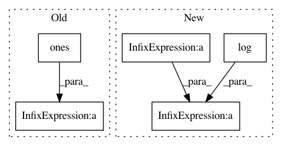

45a03ac258234ba49c0a43d46ae022493190591e,torch_geometric/nn/models/autoencoder.py,ARGA,discriminator_loss,#ARGA#Any#Any#,220
Before Change
def discriminator_loss(self, d_real, d_fake):
dc_real_loss = torch.nn.BCELoss(reduction="mean")(
d_real, torch.ones(d_real.size()))
dc_fake_loss = torch.nn.BCELoss(reduction="mean")(
d_fake, torch.zeros(d_fake.size()))
dc_gen_loss = torch.nn.BCELoss(reduction="mean")(
d_fake, torch.ones(d_fake.size()))
return dc_real_loss + dc_fake_loss + dc_gen_loss
def loss(self, d_real, d_fake, *args):
args = list(args)
args[0] = self.decoder(args[0])
After Change
return real, fake
def discriminator_loss(self, real, fake):
real_loss = -torch.log(real).mean()
fake_loss = -torch.log((1 - fake).clamp(min=1e-8)).mean()
return real_loss + fake_loss
def loss(self, z, pos_edge_index, neg_adj_mask):
recon_loss = self.reconstruction_loss(z, pos_edge_index, neg_adj_mask)
d_loss = self.discriminator_loss(*self.discriminate(z))
In pattern: SUPERPATTERN
Frequency: 3
Non-data size: 5
Instances
Project Name: rusty1s/pytorch_geometric
Commit Name: 45a03ac258234ba49c0a43d46ae022493190591e
Time: 2019-03-26
Author: matthias.fey@tu-dortmund.de
File Name: torch_geometric/nn/models/autoencoder.py
Class Name: ARGA
Method Name: discriminator_loss
Project Name: leftthomas/SRGAN
Commit Name: e7a02b6293100e21ef15870fd0f9069beaae5290
Time: 2017-12-02
Author: leftthomas@qq.com
File Name: train.py
Class Name:
Method Name:
Project Name: GPflow/GPflow
Commit Name: 456b9ed099cc5f7e99880371ac9d1924095769f3
Time: 2017-05-26
Author: joachim.vanderherten@ugent.be
File Name: GPflow/transforms.py
Class Name: Log1pe
Method Name: backward